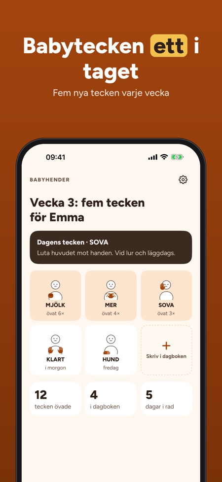
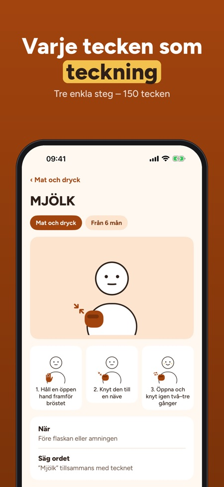
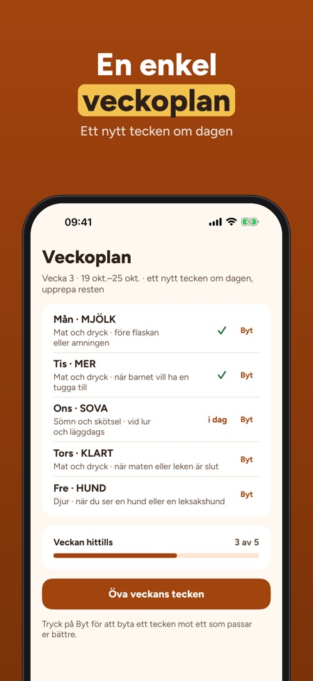

Tecken med bebisen före orden. Teckna med din bebis: 150 tecken med teckning och steg, en veckoplan med fem tecken och en dagbok för de första tecknen – utan internet.



Babyhender hjälper dig att använda enkla tecken med bebisen innan orden kommer – ett litet tecken i taget, i vardagen.
30 tecken i 3 kategorier, den första veckoplanen, dagboken och tipsen kan användas utan köp. Fullversionen är ett engångsköp som låser upp alla 150 tecken, nya veckoplaner, sånger, lekar och framsteg. Ingen prenumeration.
Tecknen är enkla vardagsgester för bebisar, ritade av oss. Många liknar tecken i svenskt teckenspråk; appen länkar till Svenskt teckenspråkslexikon för det officiella tecknet. Babyhender är oberoende och ger inga medicinska råd.